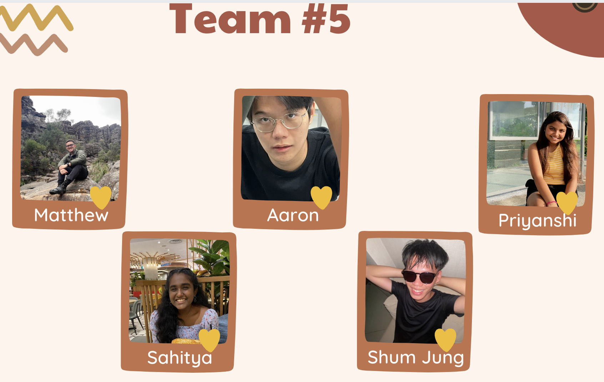

Agriculture is the main occupation in India. It is the largest producer (25% of global production), consumer (27% of world consumption) and importer (14%) of pulses in the world. While achieving food sufficiency in production, India still accounts for a quarter of the world’s hungry people and home to over 190 million undernourished people. According to the Food and Agriculture Organisation (FAO) 's 2023 global food security report, an estimated 74 per cent of the Indian population cannot afford a healthy diet. 15% of the people are below the poverty line which means that they can only afford to spend less than 50 cents a day.
In the pursuit of economic equity and food security, strategic subsidy allocation is paramount. AgriEcon Predictor is your compass in this journey, utilizing cutting-edge machine learning to predict states where subsidies can make the most impact. Our model, fueled by comprehensive CPI data, forecasts with precision, guiding leaders in optimizing resource allocation for sustainable agricultural development. Empower your decisions, ensuring no corner of the nation is left behind. Explore the future of subsidy planning with data-driven foresight.
Our taskforce contains 5 members, as shown below:
